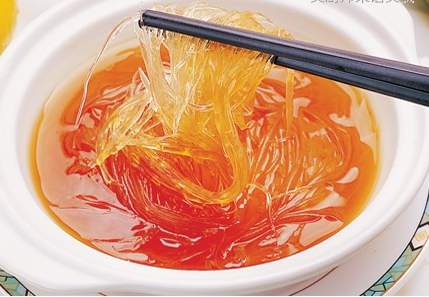
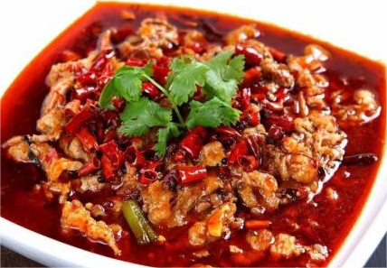
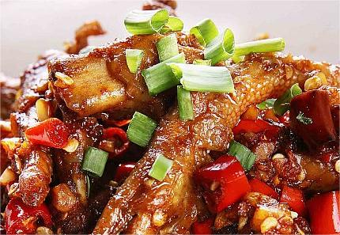
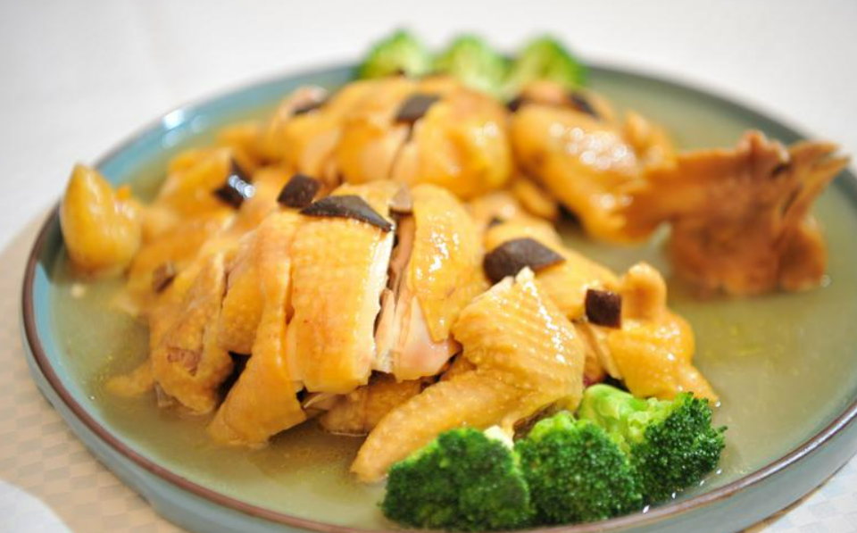
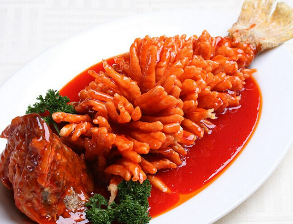
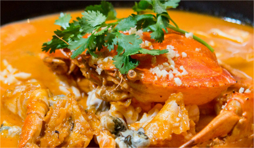
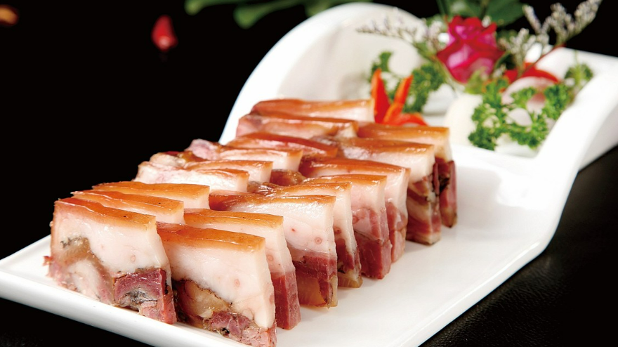
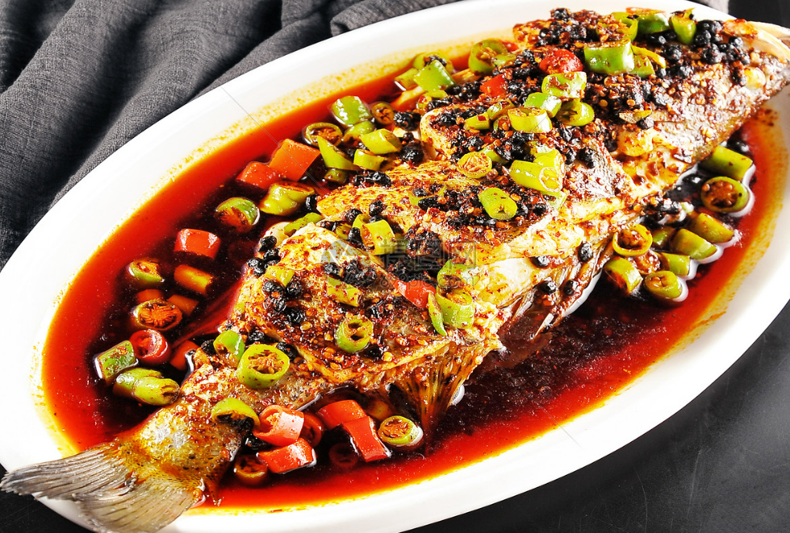

八大菜系特色简介

起源于山东的齐鲁风味，是中国传统四大菜系（也是八大菜系）中唯一的自发型菜系（相对于淮扬、川、粤等影响型菜系而言），是历史最悠久、技法最丰富、难度最高、最见功力的菜系之一。宋代以后鲁菜就成为“北食”的代表。明、清两代，鲁菜已成宫廷御膳主体，对京、津和东北各地的影响较大。是八大菜系之首。一般认为鲁菜内部分为两大派系，分别以济南和胶东两地的地方菜演化而成。有时也分为四大派系，为以上两种加上孔府菜和药膳系（食疗养生），都蜚声海内外。
山东

川菜的风格朴实而又清新,具有浓厚的乡土气息。原料多选山珍、江鲜、野蔬和畜禽。善用小炒、干煸、干烧和泡、烩等烹调法。以“味”闻名,味型较多,富于变化,以鱼香、红油、怪味、麻辣较为突出。川菜是中国最有特色的菜系,也是民间最大菜系。川菜素来享有“一菜一格,百菜百味”的声誉。川菜在烹调方法上,有炒、煎、干烧、炸、熏、泡、炖、焖、烩、贴、爆等38种之多。在口味上特别讲究色、香、味、形,兼有南北之长，以味的多、广、厚著称。历来有“七味川菜是中国汉族传统的四大菜系之一、中国八大菜系之一。
四川

湘菜特别讲究调味，尤重酸辣、咸香、清香、浓鲜。夏天炎热，其味重清淡、香鲜。冬天湿冷，味重热辣、浓鲜。湘菜调味，特色是“酸辣”，以辣为主，酸寓其中。“酸”是酸泡菜之酸，比醋更为醇厚柔和。湖南大部分地区地势较低，气候温暖潮湿，古称“卑湿之地”。而辣椒有提热、开胃、祛湿、祛风之效，故深为湖南人民所喜爱。剁椒经过乳酸发酵，具有开胃、养胃的作用。
湖南

广东菜，是中国四大菜系、八大菜系之一。狭义上的粤菜指广府菜（即广州府菜），广义上又包含潮州菜（潮汕菜）、东江菜（也称客家菜）。粤菜源自中原，传承了孔子所倡导的“食不厌精，脍不厌细”的中原饮食风格，因此粤菜做法比较复杂、精细，如广府菜中的煲仔饭、烤乳猪源自周代“八珍”美食；烧鹅源自宋朝名菜烤鸭；点心从中原传到广东后演变出虾饺、干蒸烧卖等广式点心。广府菜范围包括珠江三角洲和韶关等地，广府菜是粤菜的代表，自古有“食在广州，厨出凤城(顺德)”、“食在广州，味在西关”的美誉。
广东

简称苏菜。由于苏菜和浙菜相近，因此和浙菜统称江浙菜系。江苏菜起源于二千多年前，其中金陵菜起源于先秦时期，当时吴人善制炙鱼、蒸鱼和鱼片。南宋时，苏菜和浙菜同为“南食”的两大台柱。苏菜擅长炖、焖、蒸、炒，重视调汤，保持菜的原汁，风味清鲜，浓而不腻，淡而不薄，酥松脱骨而不失其形，滑嫩爽脆而不失其味。
金陵菜口味和醇，玲珑细巧；徐州菜色调浓重，习尚五辛；扬州菜清淡适口，刀工精细；苏州菜口味趋甜，清雅多姿。
江苏

发源于福州，以福州菜为基础，后又融合闽东、闽南、闽西、闽北、莆仙五地风味菜形成的菜系。狭义闽菜指以福州菜，最早起源于福建福州闽县，后来发展成福州、闽南、闽西三种流派,即广义闽菜。闽菜以口味清鲜、和醇、荤香、多汤为主，擅红糟、糖醋调味.故此闽菜形成三大特色，一长于红糟调味，二长于制汤，三长于使用糖醋。
福建

简称浙菜，其地山清水秀，物产丰富，故谚曰：“上有天堂，下有苏杭”。浙菜富有江南特色，历史悠久，源远流长，是中国著名的地方菜种。浙菜起源于新石器时代的河姆渡文化，经越国先民的开拓积累，汉唐时期的成熟定型，宋元时期的繁荣和明清时期的发展，浙江菜的基本风格已经形成，
浙江

安徽菜，是以皖南菜为代表的皖南菜、皖江菜、合肥菜、淮南菜、皖北菜的总称。其中皖南风味以徽州地方菜肴为代表，它是徽菜的主流和渊源。徽菜以徽州特产为主要原料，在采用民间传统烹调技法的基础上，吸收其它菜系技艺之长而烹制的以咸鲜味为主的地方菜肴。徽菜具有丰厚的文化底蕴，是全国著名的八大菜系之一。
安徽